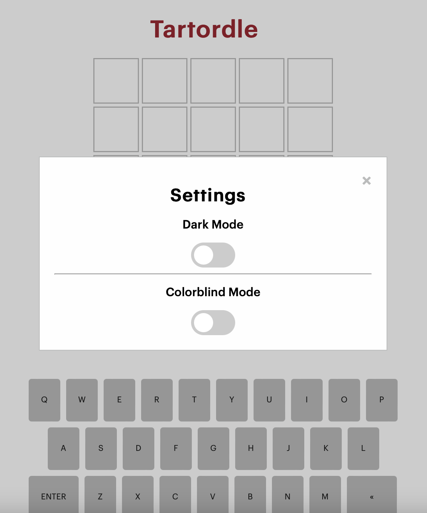
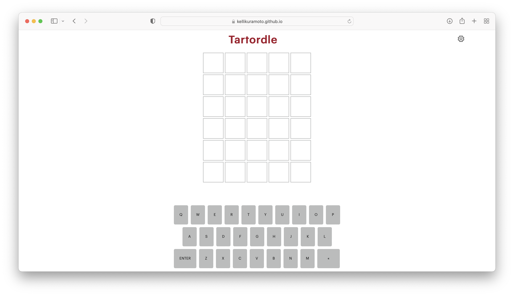

America’s favorite game, CMU style
For my Programmable User Interfaces course, we were tasked with desinging an educational interactive game for our final project.
My friends and I have been obsessed with Wordle, so I decided to to design and implement a Carnegie Mellon version, that displays information about the word once you have guessed it. I named it, Tartordle!
ROLES
Design
Wireframing
Prototyping
Web Development
CLIENT
Concept Project
TIME
April 2022
01
Hi-Fi Prototype
Since I am basing my project off of Wordle (which already has an established design). I started by designing my own hi-fi prototype very similar to NYTimes’ Wordle with the exception of some color changes.
In order to keep in line with the “CMU Brand”, I looked up Carnegie Mellon’s Brand Identity and pulled the specific green, yellow, and red shades.
Additionally, for this project we had to implement animations throughout our application. I used animate.css animations for the flipping over of tiles, very similar to Wordle’s.
02
Accessibility
As a designer, I have begun to see the impact of inaccessible designs on the web for many people who might be sight impaired. Once, my close friend sent me his Wordle, I was confused at first because his colors were blue and orange. He explained to me that because he was partly colorblind, the blue and orange were the easiest for his eyes to contrast.
In my own implementation of Tartordle, I made sure to add in a settings button where the user could switch between light mode, dark mode, colorblind mode, or any combination in between in order to make my game as accessible as possible.

Other steps I took to accessibility include:
- Alt text for images
- Indicate primary language for each page
- Reflecting the reading order in the code order
- Responsive media queries
- Interactive elements are keyboard accessible
03
Building the Game
Since the game will show additional information about the world once the user has guessed the word. I decided to store all of the information, including the description, map, and website, for each word in an object and store the objects in an array. At the start of each game, I would randomly pick a word from the array of objects.
I dynamically updated the page using javascript and the css attribute display: none; to make sure the information did not take up any space on the page.
I also added click attributes to the keyboard on the screen, as well as user keyboard functionality when guessing the letters.
Before coding my website, I ran a usability test, heuristic evaluation to ensure that my website had an easy to understand, intuitive UI. During my heuristic evaluation I ran into 3 errors which I corrected.
04
Final Game

05
Conclusion
This was my first game that I created by myself, using HTML, CSS, and Javascript. While I ran into some issues because I am used to creating applications using Java, which is an Object Oriented Programming language. It was still fun nonetheless.
I hope you enjoy playing and learned something new about Carnegie Mellon!